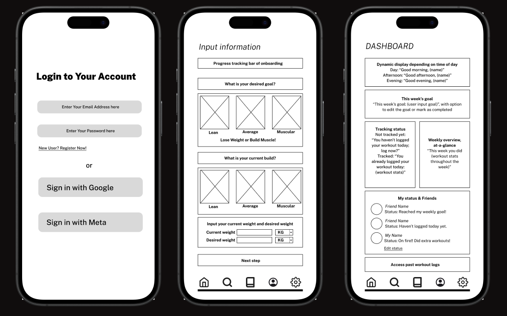
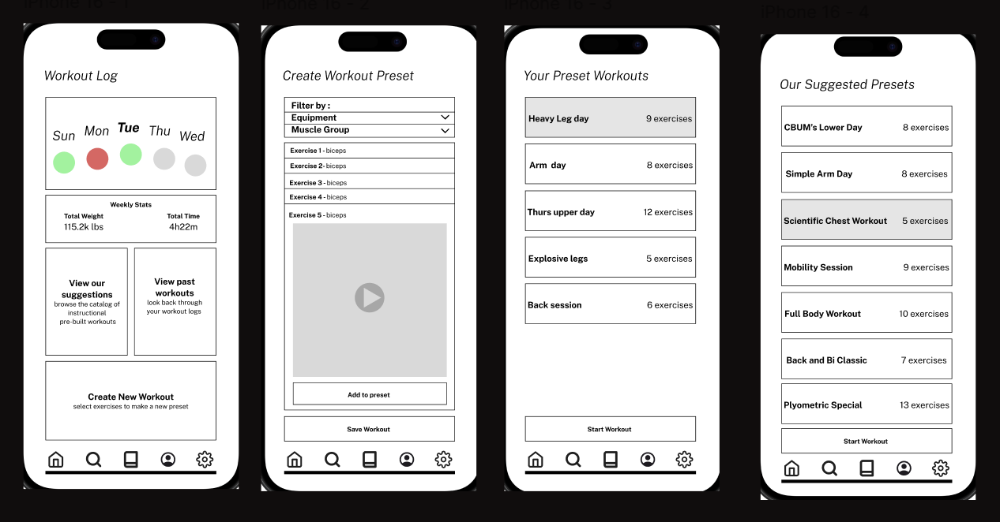
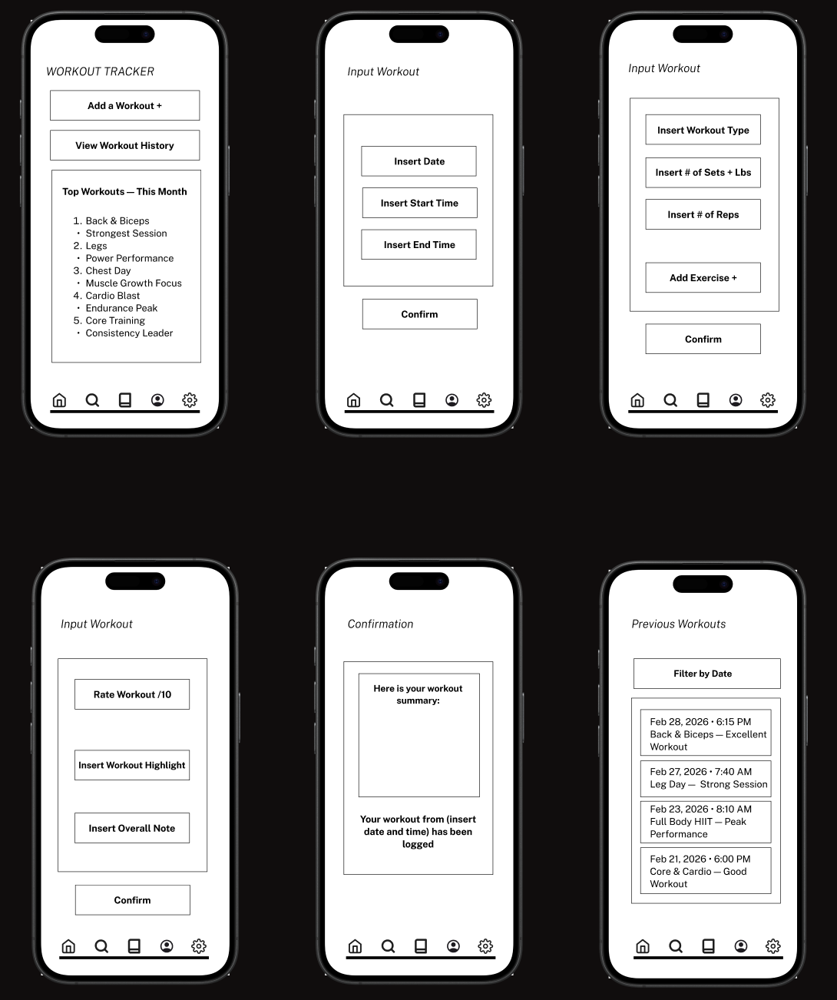

My Workout Buddy
A concept for a fitness app.

Project Overview
My Workout Buddy is a fitness app designed to help users track their workouts, s et fitness goals, and stay motivated. The app provides personalized workout plans, progress tracking, and social features to connect with friends. This app concept was developed by a team of 6 members over 12 weeks. First we took a look at what issues existed, we chose to pursue a fitness app because it's a commonly used app, and many existing fitness apps don't have some features that we'd like it to.
Ideation
Over the first 5-6 weeks, we brainstormed ideas and discussed the feasibility of each concept.
We decided on a sleek, modern, and user-friendly design for the app, with a focus on familiarity
and ease of use. We wanted to create an app that would be intuitive for users of all fitness and
tech levels. To understand the needs and pain points of potential users, we came up with 3 tasks that
a user will have to complete in the app, and made a low fidelity prototype to test the tasks. We then
conducted user research where the participants would do the task on our high-fidelity prototype.
The Tasks
- Task 1: The user is onboarding; they create an account, input their physical attributes as well as their desired goals.
- Task 2: The user works with the app to develop a personalized workout plan for a specific muscle group (or multiple, depending on their needs).
- Task 3: The user logs their workout sets/reps and amount of weight to track their progress overtime.
User Research
To understand the needs and pain points of potential users, we conducted surveys and usability tests. We gathered feedback on our high fideilty prototype and used it to make improvements to the final design. These are the feedback we gathered on each task from the user research:
- Task 1:
- Users felt the onboarding process was helpful and mostly intuitive.
- Some of the labels and color choices cause confusion.
- Overall, an effective process but has potential to cause confusion or frustration without support.
- Task 2:
- Participants found the presets to be helpful, especially beginners.
- Having access to predefined lists of exercises was very useful, videos and demos help users feel comfortable.
- There was some confusion with the filtering system and structure of the preset pages.
- Task 3:
- Users appreciated how the system takes you step by step to track your workout, so you do not miss anything
- Users like the option to rate your workout and write notes based on your experience
- One user thought the workout history section was very clear but basic
- Users thought having a confirmation screen after tracking your workout was helpful
Low Fidelity Prototype
Task 1:

Task 2:

Task 3:
